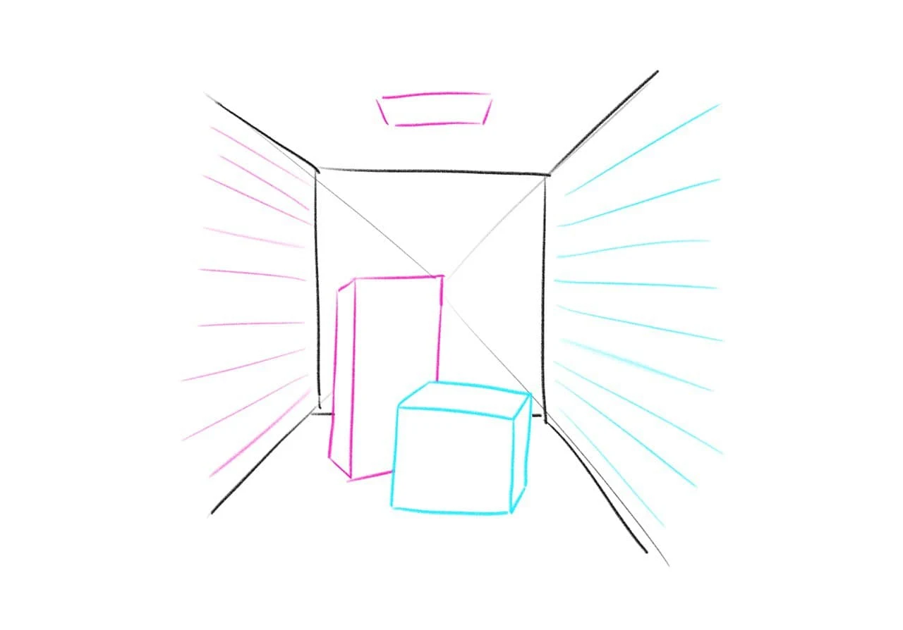

Motivation und Problemstellung
Ziel dieser Einheit soll es sein, zu verstehen, welche Rolle Beleuchtung in der Computergrafik spielt und wie simple lokale Beleuchtungsverfahren funktionieren. Bevor wir uns jedoch genauer mit der Umsetzung beschäftigen, müssen wir uns zunächst erarbeiten, welche Eigenschaften virtuelle Beleuchtung auszeichnen.
Wir wollen uns dafür ein paar Aufnahmen aus verschiedenen Spielen ansehen. Welche Eigenschaften, die ein Beleuchtungsmodell charakterisieren, kannst du daraus ableiten?
| 🧩 Beispielscreenshots |
Wie auch auf den Screenshots zu erkennen, ist Beleuchtung ein zentrales Ausdrucksmittel und für 3D-Wahrnehmung wichtig. Sie vermittelt Betrachter*innen Informationen über Oberflächenbeschaffenheit und Form von Objekten und trägt dadurch signifikant dazu bei, einen räumlichen Eindruck zu erzeugen.
Um diese Informationen zu vermitteln, muss die Belechtung der Szene also in irgendeiner Form von der Oberfläche abhängen, also insbesondere ihrer Ausrichtung sowie ihrem Material und Struktur. So würde z.B. ein Ball aus Gummi bei gleicher Beleuchtung anders aussehen als eine Kugel aus Metall.
Dabei sind verschiedene Beleuchtungseffekte zu beobachten: Zum einen sind Flächen stärker erleuchtet, je mehr sie dem Licht zugewandt sind, unabhängig von der Kameraposition. Dieser Bestandteil der Beleuchtung nennt sich diffuse Beleuchtung. Zum anderen sind auch Glanzpunkte zu erkennen, deren Position sich in Abhängigkeit von der Blickrichtung verändert. Diese highlights sind der spekulare Anteil der Beleuchtung.
In der Computergrafik I möchten wir zunächst darauf eingehen, wie diese beiden Effekte umgesetzt werden können, um grundlegend plausible Beleuchtung zu erzeugen, die von Oberflächenausrichtung und -material abhängig ist. Natürlich gehört für eine realistische Beleuchtung aber noch einiges mehr dazu. Weiterführende Effekte, die in den Screenshots zu erkennen sind, sind z.B. indirekte Beleuchtung und Schattenwurf.
Direkte vs. Indirekte Beleuchtung
Direkte Beleuchtung bezeichnet alle Beleuchtungseffekte, die nur Licht berücksichtigen, das auf direktem Wege auf die Oberfläche trifft. U.a. werden Reflexion oder Refraktion von Licht durch andere Objekte zwischen der Oberfläche und der Lichtquelle nicht berücksichtigt. Wird beispielsweise eine weiße Wand angestrahlt, würde mit einer physikalisch korrekten Darstellung ein Teil des reflektierten Lichts andere Objekte der Szene erleuchten. Dieser Effekt kann durch Beleuchtungsmodelle mit rein direkter Beleuchtung nicht abgebildet werden.
|  |
|---|
| 🧩 Cornell-Box direct vs indirect: Platzhalter |
Schattierung vs. Schattenwurf
Während es bei der Schattierung darum geht, die Oberflächenfarbe gemäß Material und Ausrichtung gegenüber Lichtquelle und Kamera anzupassen, meint Schattenwurf das Entstehen von Schatten durch Hindernisse zwischen Oberfläche und Lichtquelle.
 |
|---|
| 🧩 Shading/Shadowing |
Aber was macht diese Effekte so viel schwieriger umzusetzen als direkte Beleuchtung ohne Schattenwurf? Das liegt daran, welche Informationen jeweils benötigt werden, um das Ergebnis zu berechnen. Für direkte Beleuchtung ohne Schatten reicht es aus, die Oberflächennormale und die Positionen von Lichtquellen, Kamera und dem aktuellen Punkt auf der Oberfläche zu kennen. Für indirekte Beleuchtung und Schattenwurf hingegen wird Information über alle Objekte der Szene benötigt, die sich in irgendeiner Weise auf die Beleuchtung der aktuellen Oberfläche auswirken könnten. Zwischen all diesen Objekten kann das Licht zudem potenziell beliebig oft hin und her reflektiert werden, was die Beleuchtungsberechnung deutlich komplexer und rechenintensiver macht.
Es gibt natürlich viele clevere Ansätze, um auch mit weniger Rechenkapazität einige Aspekte komplexerer Beleuchtung umzusetzen. Einige davon, insbesondere Techniken zum Annähern von Schatten, werden in Computergrafik II thematisiert.
Zusammenfassung:
- Beleuchtung ist wichtig
- Beleuchtung vermittelt Informationen über die Szene -> insbesondere Position, Ausrichtung und Material von Oberflächen
- es gibt diffuse und spekulare Beleuchtung
- direkte Beleuchtung ist leichter als indirekte
- Schattierung ist leichter als Schattenwurf